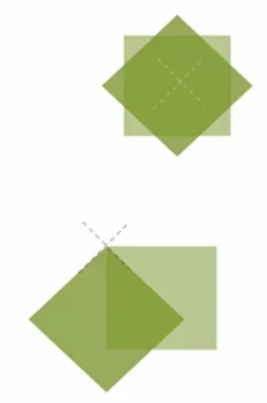
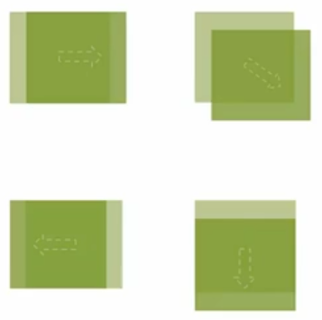
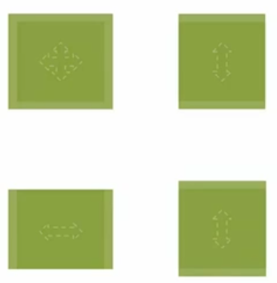
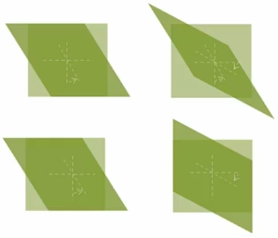
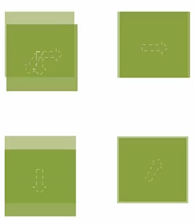
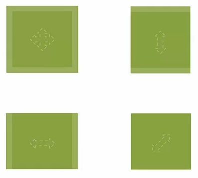
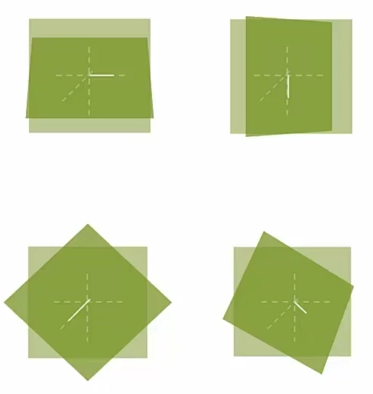

Table of Contents generated with DocToc
transform 中可以写一个或多个方法。
transform: none | <transform-function>+
transform: none
<!-- 默认值为 none -->
transform: <transform-function>+
transform: translate(50%) rotate(45deg);
transform: rotate(45deg) transform(50%)
<!-- 变形函数顺序普通结果不同，原因是坐标位置发生了改变 -->
rotate(<angle>)
rotate(45deg);
<!-- 右边旋转，顺时针 -->
rotate(-60deg);
<!-- 左边旋转，逆时针 -->
其用于设置原点的位置（默认位置为元素中心）第一值为 X 方向，第二值为 Y 方向， 第三值为 Z 方向。（当值空出未写的情况下默认为 50%）
transform-origin: [ <percentage> | <length> | left | center | right | top | bottom] | [ [ <percentage> | <length> | left | center | right ] && [ <percentage> | <length> | top | center | bottom ] ] <length>?
<!-- 默认值为 50% 50% -->
transform-origin: 50% 50%;
transform-origin: 0 0;
transform-origin: right 50px 20px;
transform-origin: top right 20px;

移动方法，参数分别代表 X 与 Y 轴的移动（偏移值均可为负值）。
translate(<translation-value>[, <translation-value>]?)
<!-- 也可单独设置 X 与 Y 轴的偏移 -->
translationX(<translation-value>)
translationY(<translation-value>)
transform: translate(50px);
transform: translate(50px, 20%);
<!-- Y 轴偏移为偏移对象的高度，X 轴为宽度 -->
transform: translate(-50px);
transform: translate(20%);

缩放方法，参数分别代表 X 与 Y 轴的缩放（缩放值均可为小数）。当第二值忽略时，默认设置为等同第一值。
scale(<number> [, <number>]?)
scaleX(<number>)
scaleY(<number>)
<!-- 整体放大 1.2 倍 -->
transform: scale(1.2);
<!-- 高度拉伸 -->
transform: scale(1, 1.2);
<!-- 宽度拉伸 -->
transform: scaleX(1.2);
<!-- 高度拉伸 -->
transform: scaleY(1.2);

其为倾斜的方法。第一值为 Y 轴往 X 方向倾斜（逆时针），第二值为 X 轴往 Y 方向倾斜（顺时针）。（倾斜值可为负值）
skew(<angle>[, <angle>]?)
skewX(<angle>)
skewY(<angle>)
transform: skew(30deg);
transform: skew(30deg, 30deg);
transform: skewX(30deg);
transform: skewY(30deg);

3D 空间旋转。
transform: rotateY(<angle>)
其用于设置图片 Y 轴旋转后的透视效果。<length> 可以理解为人眼与元素之间的距离，越紧则效果越明显。
perspective: none | <length>
perspective: none;
perspective: 2000px;
perspective: 500px;
其为设定透视的角度（透视位置均可设定为负值）。
perspective-origin: [ <percentage> | <length> | left | center | right | top | bottom] | [ [ <percentage> | <length> | left | center | right ] && [ <percentage> | <length> | top | center | bottom ] ]
perspective-origin: 50% 50%
<!-- 默认值为 50% 50% 正中间的位置进行透视-->
perspective-origin: left bottom;
perspective-origin: 50% -800px;
perspective-origin: right;
translate3d(<translate-value>, <translate-value>, <length>)
translateX(<translate-value>)
translateY(<translate-value>)
translateZ(<length>)
transform: translate3d(10px, 20%, 50px);
<!-- %的参照物为自身元素 -->
transform: translateX(10px);
transform: translateY(20%);
transform: translateZ(-100px);

scale3d(<number>, <number>, <number>)
scaleX(<number>)
scaleY(<number>)
scaleZ(<number>)
transform: scale3d(1.2, 1.2, 1);
transform: scale3d(1, 1.2, 1);
transform: scale3d(1.2, 1, 1);
transform: scaleZ(5);
<!-- Z 轴的缩放扩大并不影响盒子大小 -->

取 X Y Z 三轴上的一点并于坐标原点连线，以连线为轴进行旋转（逆时针）。
rotate3d(<number>, <number>, <number>, <angle>)
rotateX(<angle>)
rotateY(<angle>)
rotateZ(<angle>)
transform: rotate3d(1, 0, 0, 45deg);
<!-- 上面等同于 X 轴旋转 -->
transform: rotate3d(0, 1, 0, 45deg);
<!-- 上面等同于 Y 轴旋转 -->
transform: rotate3d(0, 0, 1, 45deg);
<!-- 上面等同于 2D 旋转 -->
transform: rotate3d(1, 1, 1, 45deg);

其用于设置保留内部的 3D 空间，原因是一个元素进行transform之后内部默认为flat。
transform-style: flat | perserve-3d
<!-- 默认为 flat -->
transform-style: flat;
transform-style: preserve-3d;
其用于设置背面不可见。
backface-visibility: visible | hidden
backface-visibility: visible;
backface-visibility: hidden;